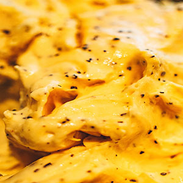

Butternut Squash Mac and Cheese
Who doesn't love a good mac and cheese? This sweet, rich, and creamy fall recipe gives that classic fall twist of a family favourite. As a bonus, it has hidden vegetables that even your picky kiddo will not notice. Try out this autumnal flavour and I guarantee it will be a returning favourite to your household every fall!
This dish is an absolutely perfect dish to serve alongside vegetables, salad, or a nice fall dinner. Feel free to add your own customizations to this dish because no matter what this recipe will taste delicious. Have fun experimenting and get ready to start of this season with a cozy feeling season.

Ingredients
- 4 cups (20 ounces) frozen butternut squash cubes
- 4 Tbsp. butter
- 1 tsp. kosher salt, divided
- 1/2 tsp. freshly ground black pepper, divided
- 1/4 cup all-purpose flour
- 2 cups whole milk
- 1/2 tsp. garlic powder
- Pinch cayenne pepper
- 1 tsp. chopped fresh thyme
- 4 oz. shredded cheddar
- 4 oz. goat cheese
- 1 lb. large shells or other short pasta
Directions
- Bring a large pot of salted water to boil over high heat.
- In a large skillet over medium-high, combine squash and ¼ cup water. Cover and cook (uncovering to stir occasionally), until tender, 5 to 7 minutes. Uncover and continue to cook, stirring constantly, until liquid evaporates, 2 to 3 minutes.
- Add butter, ½ teaspoon salt, and ¼ tsp pepper and stir until butter is melted. Add flour and stir to incorporate. Cook, stirring constantly, until squash mixture thickens and raw flour has had a chance to cook, 2 to 3 minutes. Gradually add milk, stirring constantly. Add garlic powder, cayenne, and thyme and bring to a simmer. Add cheddar and goat cheese, stirring until melted. Remove from heat and let cool slightly.
- Add pasta to boiling water and cook 3 minutes short of package instructions. Drain, reserving ½ cup pasta water, and return to pot.
- Meanwhile, transfer squash mixture to a blender and puree until smooth (you should have just over 4 cups).
- Place the pot with cooked pasta over medium-low heat and stir in sauce until coated. Remove from heat and let cool 5 minutes. (If sauce looks thin, don't worry—it with thicken as it begins to cool.) Add splashes of pasta water to loosen until you've reached your desired consistency.